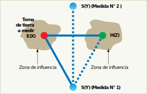

Medida de tensión y frecuencia
Para medir tensión y frecuencia:
- Gire la llave selectora rotativa a la posición V.
- Utilice para esta prueba todos los terminales (rojo, azul y verde). Puede utilizar conductores de prueba o el cable para la red eléctrica al medir tensión de CA.
- La pantalla principal (superior) muestra la tensión de CA. El comprobador lee tensión de CA hasta 500 V. Pulse F1 para conmutar la lectura de tensión entre L-PE, L-N y N-PE.
- La pantalla secundaria (inferior) muestra la frecuencia de la red eléctrica.
Medida de resistencia de aislamiento
La medida de la resistencia de aislamiento de la instalación eléctrica tiene como finalidad comprobar la integridad de los conductores y sus aislantes. Su verificación ayuda a excluir la posibilidad de un cortocircuito o de una derivación a tierra que represente un peligro mortal (por descarga eléctrica), o para lo propia instalación (incendio de origen eléctrico).
Según el REBT en su ITC BT 19 apartado 2.9 - Medida de resistencia de aislamiento y rigidez dieléctrica - las instalaciones deberán presentar una resistencia de aislamiento al menos igual a los valores indicados en la tabla siguiente:
| Tensión nominal de la instalación |
Tensión de ensayo en Corriente Contínua (V) |
Resistencia de aislamiento (MΩ) |
| Muy Baja Tensión de Seguridad (MBTS) |
250 |
|
| Muy Baja Tensión de Protección (MBTP) |
250 |
|
| Inferior o igual a 500 V |
500 |
|
| Superior a 500 V |
1000 |
|
Este aislamiento se entiende para una instalación en la cual la longitud del conjunto de canalizaciones y cualquiera que sea el número de conductores que las componen no exceda de 100 metros. Cuando esta longitud exceda del valor anteriormente citado y pueda fraccionarse la instalación en partes de aproximadamente 100 metros de longitud, bien por seccionamiento, desconexión, retirada de fusibles o apertura de interruptores, cada una de las partes en que la instalación ha sido fraccionada debe presentar la resistencia de aislamiento que corresponda según la tabla anterior.
La medida se efectuará mediante un generador de corriente continua, capaz de suministrar las tensiones de ensayo especificadas en la tabla anterior con una corriente de 1 mA para una carga igual a la mínima resistencia de aislamiento especificada para cada tensión.
El aislamiento se medirá de dos formas distintas:
-
Entre todos los conductores del circuito de alimentación (fases y neutro) unidos entre sí con respecto a tierra (aislamiento con relación a tierra).
Los conductores, incluido el conductor neutro, estarán aislados de tierra, así como de la fuente de alimentación. Es importante recordar que estas medidas se efectúan por tanto en circuitos sin tensión, o mejor dicho desconectados de su fuente de alimentación habitual, ya que en caso contrario se podría averiar el comprobador. La tensión de prueba es la tensión continua generada por el propio megóhmetro.
La medida de aislamiento con relación a tierra, se efectuará uniendo a ésta el polo positivo del megóhmetro y dejando, en principio, todos los receptores conectados y sus mandos en posición “paro”, asegurándose que no existe falta de continuidad eléctrica en la parte de la instalación que se verifica; los dispositivos de interrupción intercalados en la parte de instalación que se verifica se pondrán en posición de "cerrado" y los cortacircuitos fusibles instalados como en servicio normal a fin de garantizar la continuidad eléctrica del aislamiento. Todos los conductores se conectarán entre sí incluyendo el conductor neutro o compensador, en el origen de la instalación que se verifica y a este punto se conectará el polo negativo del megóhmetro.
-
Entre cada pareja de conductores activos.
La segunda medida a realizar corresponde a la resistencia de aislamiento entre conductores polares, se efectúa después de haber desconectado todos los receptores, quedando los interruptores y cortacircuitos fusibles en la misma posición que la señalada anteriormente para la medida del aislamiento con relación a tierra. La medida de la resistencia de aislamiento se efectuará sucesivamente entre los conductores tomados dos a dos, comprendiendo el conductor neutro o compensador.
Para medir la resistencia del aislamiento:
- Gire la llave selectora rotativa a la posición RISO
- Utilice los terminales L y PE (rojo y verde) para esta prueba.
- Utilice el F4 para seleccionar la tensión de la prueba. La mayoría de las pruebas del aislamiento se realizan a 500 V, pero respete los requisitos de prueba locales.
- Mantenga presionado hasta que la lectura se estabilice y el comprobador emita una señal.
Medida de continuidad
La finalidad de la prueba es garantizar que no se han producido desperfectos o cortes en el cableado durante la instalación del mismo, ya sea sobre los conductores activos o en los conductores de protección.
La ITC-BT-05 - Verificaciones e Inspecciones - en su apartado 6, clasificación de defectos, se considera como defecto grave la falta de continuidad de los conductores de protección.
El REBT no define, excepto para instalaciones en quirófanos y salas de intervención, ITC-BT-38, valores máximos concretos para la resistencia de los conductores de protección. En concreto la impedancia entre el embarrado común de puesta a tierra de cada quirófano o sala de intervención y las conexiones a masa, o los contactos de tierra de las bases de toma de corriente, no deberá exceder de 0,2 Ω. Además todas las partes metálicas accesibles han de estar unidas al embarrado de equipotencialidad mediante conductores de cobre aislados e independientes con una impedancia entre estas partes y el embarrado de equipotencialidad que no deberá exceder de 0,1 ohmios.
En general, la discontinuidad de un cable supone valores de resistencia elevados (superiores a 1 MΩ) mientras que pequeños valores de resistencias (2 Ω ó 3 Ω) son indicativos de una buena continuidad.
Esta medida se realiza con los circuitos bajo prueba libres de tensión. Se recomienda realizarlo con una fuente de tensión, de 4 V a 24 V en vacío, en corriente continua o alterna y que sea capaz de suministrar una corriente mínima de 200 mA, se suele utilizar un óhmetro, o un equipo multifunción que cumplan con estas características.
La medida se realiza conectando una de las puntas de prueba a la barra o punto equipotencial general y la otra punta de prueba al conductor de protección de la base de enchufe bajo prueba. Este procedimiento se repite para cada una de las bases de enchufe o puntos de conexión del conductor de protección.
Si bien comprobar la continuidad de un cable no instalado es una tarea sin ninguna dificultad por tener accesible ambos extremos del cable, en el caso del cable instalado los extremos de los conductores hace que necesariamente se tenga que recurrir al ensayo de los conductores unidos entre sí (de dos en dos) y determinar, por ejemplo, conjuntamente la continuidad del cable de neutro y fase en la misma medida. Teniendo en cuenta que la longitud de los cables y el material con que están construidos son similares, el valor de continuidad resultante será la mitad del valor medido sobre ambos. La medida puede efectuarse desde el cuadro eléctrico (cortocircuitando en las tomas de corriente) o desde las tomas de corriente (cortocircuitando en el cuadro eléctrico).
Para medir continuidad:
- Gire la llave selectora rotativa a la posición RLO.
- Utilice los terminales L y PE (rojo y verde) para esta prueba.
- Antes de hacer una prueba de continuidad, use el adaptador de cero para poner en cero la resistencia de los conductores de prueba. Mantenga presionado ZERO hasta que aparezca el anunciador ZERO. El comprobador mide la resistencia de las sondas, almacena la lectura en la memoria y la sustrae de las lecturas. El valor de resistencia se almacena incluso al desconectar la energía, por lo que no necesita repetir la operación cada vez que utiliza el instrumento. Asegúrese de que las baterías tengan una buena condición de carga antes de poner a cero los conductores de la prueba.
Mantenga presionado TEST hasta que la lectura se estabilice. Si la señal acústica de continuidad está activada, el comprobador emite un pitido continuo para los valores medidos inferiores a 2 Ω y no se oye ningún pitido de lectura estable para los valores medidos superiores a 2 Ω.
Si un circuito tiene corriente, la prueba se inhibe y aparece la tensión de CA en la pantalla secundaria (inferior).
Medida de la resistencia a tierra
La resistividad de los terrenos
La resistividad (φ) de un terreno se expresa en ohmios-metro (Ω·m). Esto corresponde a la resistencia teórica en Ohmios de un cilindro de tierra de 1 m2 de sección y de 1 m de longitud. Su medida permite conocer la capacidad del terreno para conducir la corriente eléctrica. Por lo tanto, cuanto más débil sea la resistividad, más débil será la resistencia de la toma de tierra construida en este lugar.
La resistividad es muy variable según las regiones y la naturaleza de los terrenos. Depende del índice de humedad y de la temperatura (las heladas o la sequía la aumentan). Por ello una resistencia de tierra puede variar según las estaciones y las condiciones de medida.
Dado que la temperatura y la humedad son más estables al alejarse de la superficie de la tierra, cuanto más profundo esté el sistema de puesta a tierra menos sensible será el mismo a los cambios medioambientales.
Por lo tanto se recomienda realizar la toma de tierra lo más profundo posible.
La medida de resistencia de una toma de tierra existente
Es importante recordar que la medida de tierra de referencia es la medida de tierra con 2 picas. Se hace referencia a esta medida en todas las normas de control de una instalación eléctrica que permite realizar una medida precisa y segura de la resistencia de tierra.
El principio de medida consiste en hacer circular con un generador apropiado G, una corriente alterna I constante a través de la toma auxiliar H llamada toma de inyección de corriente. Realizándose el retorno por la toma de tierra.
Se mide la tensión V entre las tomas E y el punto del terreno donde el potencial es nulo mediante otra toma auxiliar S llamada toma de potencial 0 V. El cociente entre la tensión así medida y la corriente constante inyectada I da la resistencia buscada.
$R_E = \frac{U_{ES}}{I}$
Medida de tierra de 3 polos llamada método del 62 %
Este método requiere el uso de dos electrodos auxiliares para permitir la inyección de corriente y la referencia de potencial 0 V. La posición de dos electrodos auxiliares, con respecto a la toma de tierra a medir E(X), es determinante.
Para realizar una medida correcta, la “toma auxiliar” de referencia de potencial (S) no tiene que estar clavada en las zonas de influencia de las tierras E y H, creadas por la circulación de la corriente I.
Estadísticas de campo han demostrado que el método ideal para garantizar la mayor precisión de medida consiste en colocar la pica S a 62 % de E en la recta EH.
Conviene luego asegurarse de que la medida no varía o poco moviendo la pica S a ±10 % (S’ y S”) a cada lado de su posición inicial en la recta EH.
Si la medida varía, significa que (S) se encuentra en la zona de influencia. Se debe por lo tanto aumentar las distancias y volver a realizar las medidas.
El método de medida en triángulo (dos picas)
Este método requiere el uso de dos electrodos auxiliares. Este método se utiliza cuando no se puede aplica el método del 62% por no conseguir una alineación o un obstáculo impide un alejamiento suficiente de H.
Consiste en:
- clavar las picas S y H al igual que la toma de tierra E, formando las picas S y H un triángulo equilátero,
- efectuar una primera medida colocando S por un lado, luego una segunda medida colocando S por el otro lado.
Si los valores obtenidos son muy diferentes, la pica S se encuentra en una zona de influencia. Se debe por lo tanto aumentar las distancias y volver a realizar las medidas.
Si los valores obtenidos son próximos puede considerarse que la medida es correcta pero, para asegurarse de ello, vuelva a realizar las medidas aumentando las distancias, pues este método proporciona resultados inciertos.

Para medir la resistencia de tierra:
- Gire la llave selectora rotativa a la posición RE.
- Pulse y suelte TEST. Espere que finalice la prueba.
- La pantalla principal (superior) muestra la lectura de resistencia de tierra.
- La tensión detectada entre las estacas de prueba aparecerá en la pantalla secundaria. Si hay más de 10 V, la prueba se inhibe.
- Si la medición es demasiado ruidosa, aparecerá el error 5. (La exactitud del valor medido está disminuida por el ruido). Presione la flecha hacia abajo para mostrar el valor medido. Presione la flecha hacia arriba para volver a la pantalla del error 5.
- Si la resistencia de la sonda es demasiado alta, aparecerá el error 6. La resistencia de la sonda puede reducirse introduciendo las estacas de prueba más profundamente en la tierra o humedeciendo la tierra a su alrededor.
Comprobación de los interruptores diferenciales
En la ITC-BT-24 ,apartado 4.1.2 se dice que en las instalaciones con esquema TT, se utilizarán los dispositivos de protección siguientes:
- Dispositivos de protección de corriente diferencial-residual.
- Dispositivos de protección de máxima corriente, tales como fusibles, interruptores automáticos. Estos dispositivos solamente son aplicables cuando la resistencia RA tiene un valor muy bajo.
Estos dispositivos cumplirán la siguiente condición:
RA × IA ≤ U
donde:
- RA es la suma de las resistencias de la toma de tierra y de los conductores de protección de masas.
- IA es la corriente que asegura el funcionamiento automático del dispositivo de protección. Cuando el dispositivo de protección es un dispositivo de corriente diferencial-residual es la corriente diferencial-residual asignada.
- U es la tensión de contacto límite convencional (50, 24V u otras, según los casos).
En la práctica, los dispositivos de protección contra sobreintensidades no son de aplicación para la protección contra los contactos indirectos, ya que para alcanzar, sin riesgo para las personas, una intensidad suficiente para provocar la desconexión del circuito con defecto, debería garantizarse, de forma fiable y permanente durante toda la vida de la instalación, una resistencia de puesta a tierra extremadamente pequeña que es muy difícil de conseguir.
En una instalación industrial en la que se utilizan Interruptores Automáticos según UNE-EN 60898, la corriente de disparo según la característica térmica correspondiente a 5 segundos es del orden de 5 × In.
Si por ejemplo el calibre del interruptor automático fuera de 25 A, se tendría:
Ia = 5 × 25 = 125 A
Aplicando la condición más restrictiva para esquemas TT y suponiendo una tensión de contacto máxima de 24 V, correspondiente a locales húmedos:
$R_A · I_a \le U \Rightarrow R_A \le \displaystyle\frac{U}{I_a} = \frac{24}{125} \approx 0,2\ \Omega$
Que debería garantizarse a lo largo de toda la vida útil de la instalación para todas las masas de la misma.
Según la guía técnica de aplicación del REBT, anexo 4, verificación de instalaciones eléctricas, la comprobación de diferenciales requiere de un aparato capaz de inyectar a través del diferencial bajo prueba una corriente de fugas especificada y conocida que según su valor deberá hacer disparar al diferencial. Para hacer la prueba el comprobador se conecta en cualquier base de enchufe aguas abajo del diferencial en ensayo, estando la instalación en servicio. Además cuando dispare el diferencial el comprobador debe ser capaz de medir el tiempo que tardó en disparar desde el instante en que se inyectó la intensidad de fugas.
Normalmente estos equipos inyectan una corriente senoidal, pero para comprobar algunos diferenciales especiales a veces es necesario también que sean capaces de inyectar corriente alterna rectificada de media onda o una corriente continua.
Las pruebas habituales para comprobar el funcionamiento de un diferencial del tipo general son las siguientes:
- Se inyecta una intensidad mitad de la intensidad diferencial residual asignada, con un ángulo de fase de corriente respecto de la onda de tensión de 0°, y el diferencial no debe disparar.
- Se repite la prueba anterior con un ángulo de fase de 180° y el diferencial no debe disparar.
- Se inyecta una intensidad igual la intensidad diferencial residual asignada, con un ángulo de fase de corriente respecto de la onda de tensión de 0°, y el diferencial debe disparar en menos de 200 ms.
- Se repite la prueba anterior con un ángulo de fase de 180° y el diferencial debe disparar en menos de 200 ms.
- Se inyecta una intensidad igual al doble de la intensidad diferencial residual asignada, con un ángulo de fase de corriente respecto de la onda de tensión de 0°, y el diferencial debe disparar en menos de 150 ms.
- Se repite la prueba anterior con un ángulo de fase de 180° y el diferencial debe disparar en menos de 150 ms.
- Se inyecta una intensidad igual a cinco veces la intensidad diferencial residual asignada, con un ángulo de fase de corriente respecto de la onda de tensión de 0°, y el diferencial debe disparar en menos de 40 ms.
- Se repite la prueba anterior con un ángulo de fase de 180° y el diferencial debe disparar en menos de 40 ms.
Para los diferenciales selectivos del tipo S las pruebas tienen otros límites de aceptación.
Para medir el tiempo de disparo de los interruptores por corriente diferencial utilizando el modo automático:
- Enchufe el comprobador en el tomacorriente.
- Gire la llave selectora rotativa a la posición ΔTT.
- Pulse F1 para seleccionar la capacidad nominal de corriente de los interruptores por corriente diferencial (10, 30 o 100 mA).
- Pulse F2 para seleccionar el modo automático.
- Pulse F3 para seleccionar la forma de onda de la corriente de la prueba del interruptor por corriente diferencial.
- Pulse y libere TEST.
El comprobador suministra la mitad de la corriente nominal del interruptor por corriente diferencial (usando el multiplicador ×½) durante 310 ó 510 ms (2 segundos en el Reino Unido). Si el interruptor por corriente diferencial se dispara, la prueba finaliza. Si el interruptor no se dispara, el comprobador invierte la fase y repite la prueba. La prueba termina si el interruptor se dispara.
Si el interruptor no se dispara, el comprobador restablece la configuración de fase inicial y suministra una corriente igual a la corriente nominal del interruptor por corriente diferencial (usando el multiplicador ×1). El interruptor debe dispararse, y los resultados de la prueba aparecen en la pantalla principal.
- Restablezca el interruptor por corriente diferencial.
- El comprobador invierte las fases y repite la prueba 1×. El interruptor se debe disparar y los resultados de la prueba aparecen en la pantalla principal.
- Restablezca el interruptor por corriente diferencial.
- El comprobador restablece la configuración de fase inicial y suministra 5 veces el valor de la corriente nominal del interruptor por corriente diferencial (usando el multiplicador ×5) durante 50 ms. El interruptor debe dispararse y los resultados de la prueba aparecen en la pantalla principal.
- Restablezca el interruptor por corriente diferencial.
- El comprobador invierte la fase y repite la prueba 5×.El interruptor se debe disparar y los resultados de la prueba aparecen en la pantalla principal.
- Restablezca el interruptor por corriente diferencial.
- Puede usar las teclas de flecha para revisar los resultados de la prueba. El primer resultado mostrado es la última medición tomada, la prueba de 5 veces la corriente. Pulse la tecla de flecha hacia abajo para volver a la primera prueba a la mitad de la corriente nominal.
- Si el tiempo de disparo está de acuerdo con el estándar adecuado del RCD, se muestra el indicador del RCD . Para obtener más información, vea la Tabla de tiempos de disparo máximos.
- Los resultados de la prueba están en la memoria temporal. Si desea almacenar los resultados de la prueba, pulse MEMORY y continúe como se describe en “Almacenamiento y recuperación de mediciones”. El archivo y la recuperación de la medición sólo está disponible en los modelos 1653B y 1654B.
Comprobación de orden de fases
Esta comprobación se efectúa mediante un equipo específico o utilizando un comprobador multifunción de baja tensión que tenga esta capacidad. Esta medida es necesaria por ejemplo si se van a conectar motores trifásicos, de forma que se asegure que la secuencia de fases es directa antes de conectar el motor.
Para realizar una prueba de secuencia de fases:
- Gire la llave selectora rotativa a la posición que indica la figura.
- La pantalla principal (superior) muestra:
- 123 para la secuencia de fases correcta.
- 321 para la secuencia de fases invertida.
- Guiones (---) en vez de números si se detecta una tensión insuficiente.